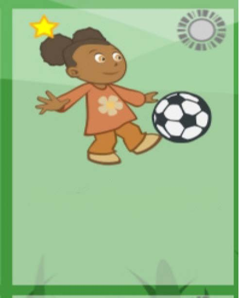
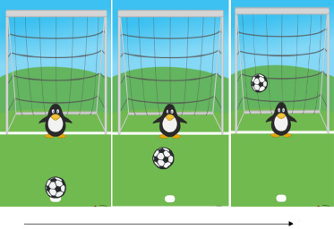
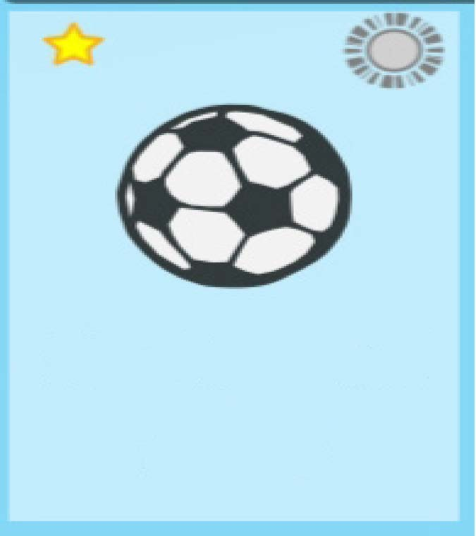
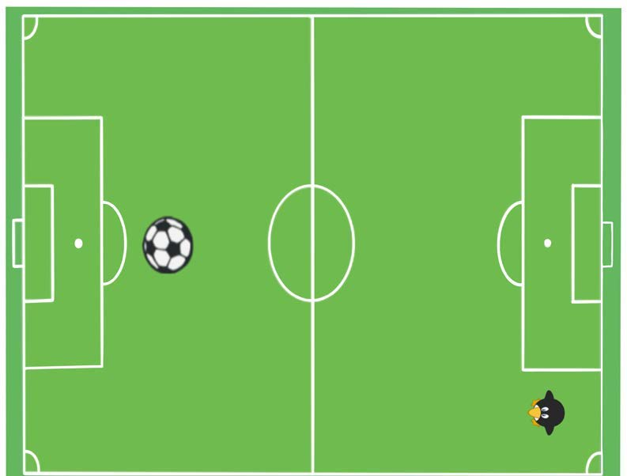

Mchezo wa mkwaju wa penalti
Sehemu hii inahusisha kucheza michezo ya mpira kupitia programu ya kidigiti ya GCompris. Ili kucheza mchezo huu, utahitaji kutumia vifaa vya TEHAMA kama vile simu janja, kompyuta na tabuleti. Utajifunza kucheza mchezo wa mkwaju wa penalti na mpira wa miguu kupitia programu ya GCompris. Lengo la michezo hii ni kukuza stadi za TEHAMA na uchezaji wa mpira wa miguu.

Namna ya kucheza mkwaju wa penalti
- Pakua programu ya GCompris katika simu janja, tabuleti au kompyuta.
- Chagua mchezo wa kupiga mkwaju wa penalti.
- Angalia vema goli na mahali alipokaa golikipa.
- Chagua upande unaotaka kupeleka mpira ili golikipa asiukamate.
- Bofya mara mbili au gusa mara mbili harakaharaka upande unaotaka ili kuupiga mpira.
- Ikitokea golikipa ameshika mpira ubonyeze mara moja kuurejesha.

Mchezo wa mpira wa miguu

Namna ya kucheza
- Angalia goli na mwelekeo wa golikipa.
- Chagua upande unaotaka kupeleka mpira ili golikipa asiukamate.
- Buruta mpira kwa kasi ili kuupa mwelekeo.
- Achia ili kuupiga mpira.

Shughuli ya nne
Shirikiana na wenzako katika jozi kupiga mkwaju wa penalti. Mchezaji mmoja atakuwa mlinda mlango kuzuia mpira usiingie golini. Kila mchezaji apige mikwaju mitatu ya penalti, kisha mtabadilishana majukumu.